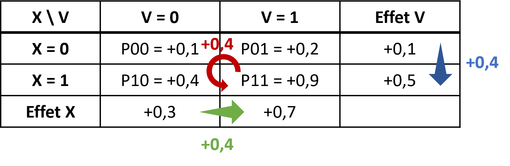
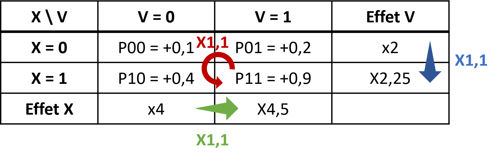
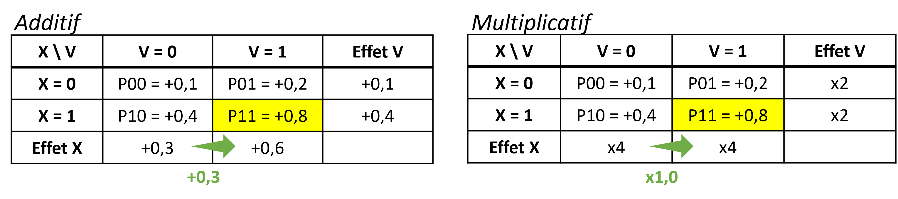
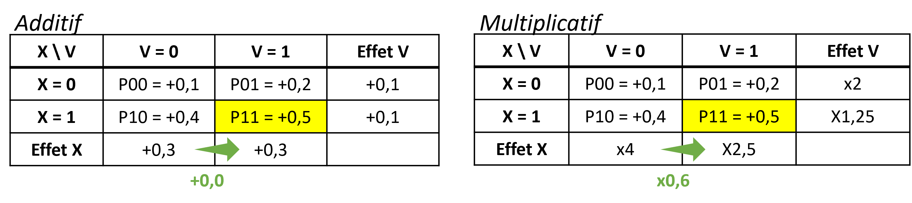
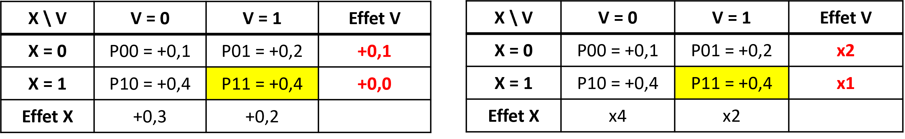
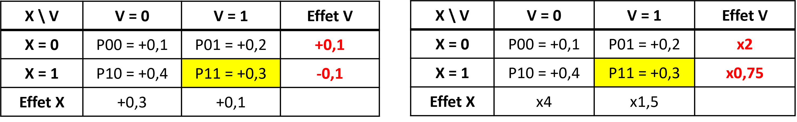

Chapitre 5 La question des échelles
5.1 Mesures des interactions
Echelle additive
Une façon simple de mesurer l’interaction est de mesurer à quel point l’effet conjoint de deux facteurs est différents de la somme de leurs effets individuels [2] :
- \(\small AI = DR(X,V) - [DR(X|V=0) + DR(V|X=0)]\)
- \(\small AI = (p_{11} - p_{00}) - [(p_{10} - p_{00}) + (p_{01} - p_{00})]\)
- soit \(\small AI =p_{11} - p_{10} - p_{01} + p_{00}\)
ExempleMesure de l’interaction dans l’exemple 1

On retrouve l’effet d’interaction, calculé/exprimé de différentes façon,
Soit la différence entre l’effet joint et la somme des effets individuels (flèche rouge) :
- \(\small DR(X, V) - [DR(X|V=0) + DR(V|X=0)] = 0.8 - (0,3 + 0,1) = +0,4\)
- \(\small p_{11} - p_{10} - p_{01} + p_{00} = 0,9 - 0,4 - 0,2 + 0,1 = +0,4\)
Soit la différence entre l’effet de X quand V = 1 et quand V = 0 (flèche verte) :
- \(\small (p_{11} - p_{01}) - (p_{10} - p_{00}) = (0,9 - 0,2) - (0,4 - 0,1) = 0,7 - 0,3 = +0,4\)
Soit la différence entre l’effet de V quand X = 1 et quand X = 0 (flèche bleue) :
- \(\small (p_{11} - p_{10}) - (p_{01} - p_{00}) = (0,9 - 0,4) - (0,2 - 0,1) = 0,5 - 0,1 = +0,4\)
On peut l’interpréter ainsi : la probabilité d’avoir une maladie chronique quand on fume augmente de +30% quand on n’a pas vécu d’évémement traumatique (40% contre 10%), et de +70% quand on a vécu un événement traumatique (de 20 à 90%). Donc l’effet du tabac est augmenté de +40% (0,70 - 0,30) quand on a vécu un événement traumatique par rapport à l’effet du tabac quand on n’a pas vécu d’événement traumatique.
Echelle multiplicative
En cas d’outcome binaire, c’est souvent le RR ou l’OR qui est utilisé pour mesurer les effets. La mesure de l’interaction sur une échelle multiplicative serait donc [2] :
- \(\small MI = \frac{RR_{11}}{RR_{10} \times RR_{01}}\)
- soit \(\small MI = \frac{p_{11} / p_{00}}{(p_{10} / p_{00}) \times (p_{01} / p_{00})}\)
- soit \(\small MI = \frac{p_{11} \times p_{00}}{p_{10} \times p_{01}}\)
ExempleMesure de l’nteraction dans l’exemple 1

On retrouve l’effet d’interaction, calculé/exprimé de différentes façon,
Soit le rapport entre l’effet joint et le produit des effets individuels (flèche rouge) :
- \(\small \frac{RR(X, V)}{RR(X| V=0)*RR(V|X=0)} = \frac{9}{4 \times 2} = \times 1,1\)
- \(\small\frac{p_{11} / p_{00}}{(p_{10} + p_{01}) / p_{00}} = \frac{0,9 / 0,1}{(0,4 \times 0,2) / 0,1} = \times 1,1\)
Soit le produit de l’effet de X quand V = 1 et quand V = 0 (flèche verte) :
- \(\small \frac{p_{11} / p_{01}}{p_{10} / p_{00}} = \frac{0,9 / 0,2}{0,4 / 0,1} = \frac{\times 4,5 }{\times 4} = \times 1,1\)
Soit le produit de l’effet de V quand X = 1 et quand X = 0 (flèche bleue):
- ou \(\small \frac{p_{11} / p_{10}}{p_{01} / p_{00}} = \frac{0,9 / 0,4}{0,2 / 0,1} = \frac{\times 2,25}{\times 2} = \times 1,1\)
On peut l’interpréter ainsi : la probabilité d’avoir une maladie chronique quand on fume est multiplier par 4 quand on n’a pas vécu d’évémement traumatique (40% contre 10%), et par 4,5 quand on a vécu un événement traumatique (90% contre 20%). Donc l’effet du tabac est multiplié par 1,1 (\(\small \frac{4,5}{4}\)) quand on a vécu un événement traumatique par rapport à l’effet du tabac quand on n’a pas vécu d’événement traumatique.
5.2 Lien entre les deux échelles
Un apparent paradoxe
Mesurer l’interaction sur une seule échelle peut être trompeur [9]. On peut régulièrement observer une interaction positive dans une échelle (par exemple \(\small p11 - p10 - p01 + p00 > 0\)) et négative dans l’autre (par exemple \(\small (p11 \times p00) / (p10 \times p01) <1\)).
ExempleDans cet exemple (on modifie seulement la probabilité \(\small p_{11}\), en jaune dans le tableau), on observe une interaction additive positive (l’effet de \(\small X\) augmente de +20% quand \(\small V=1\) par rapport à \(\small V=0\)) mais une interaction multiplicative négative (l’effet de \(\small X\) est multiplié par 0,9 - donc diminue - quand \(\small V=1\) par rapport à \(\small V=0\)).
Remarque : on retrouverait les mêmes résultats en comparant les effets de \(\small V\) dans les strates de \(\small X\) ou les effets conjoints et somme/produit des effets individuels.

Il a même été démontré que si on n’observe pas d’interaction sur une échelle, alors on en observera obligatoirement sur l’autre échelle… [2].
ExempleDans cet exemple, il n’y a pas d’interaction multiplicative (effet de \(\small X\) identique quelque soit \(\small V\)), mais sur l’echelle additive, on observe une interaction positive.

Dans cet autre exemple, il n’y a pas d’interaction additive (effet de \(\small X\) identique quelque soit \(\small V\)), mais sur l’echelle multiplicative, on observe une interaction négative.

Le continuum
Dans un article de 2019 [10], Vanderweele décrit le continuum existant entre les 2 échelles.
Par exemple, dans l’exemple 1, l’interaction additive et multiplicative sont positives. Mais si l’on fait varier la probabilité \(\small p_{11}\) en la diminuant, l’interaction multiplicative devient négative alors que l’interaction additive reste positive. Puis, lorsque la probabilité diminue encore, l’interaction devient négative sur les deux échelles :

Interactions pures et qualitatives, interactions inversées
Dans ce continuum, si l’on continue à faire varier \(\small p_{11}\), des cas particuliers d’interaction peuvent être retrouvés :

- Interaction pure de \(\small X\) en fonction de \(\small V\), si \(\small X\) n’a un effet que dans une seule strate de \(\small V\). Par exemple, \(\small p_{10} = p_{00}\) et \(\small p_{11} \neq p_{01}\).
Par exemple (ligne 6) ici, \(\small V\) a un effet (sur les deux échelles) si \(\small X=0\) mais pas si \(\small X=1\) :

- Interaction qualitative de \(\small X\) en fonction de V, si l’effet de \(\small X\) dans une strate de \(\small V\) va dans la direction opposée de l’autre strate de \(\small V\).
Par exemple (ligne 7), \(\small V\) a un effet positif si \(\small X=0\) mais négatif si \(\small X=1\) :

- Antagonisme parfait : l’effet joint est nul \(\small p_{11} - p_{00} = 0\), alors que les effets individuels sont positifs.
Par exemple (ligne 10), \(\small p_{11} - p_{00} = 0\) alors que \(\small p_{01} - p_{00} > 0\) et \(\small p_{10} - p_{00} > 0\)
- Interaction inversée (ligne 11): l’effet joint est négatif, alors que les effets individuels sont positifs.
Par exemple (ligne 10), \(\small p_{11} - p_{00} < 0\) alors que \(\small p_{01} - p_{00} > 0\) et \(\small p_{10} - p_{00} > 0\)
5.3 Synthèse
Quelle échelle choisir pour mesurer un effet d’interaction ?
Même si en pratique l’échelle multiplicative est plus utilisée, car les outcomes sont souvent binaires en épidémiologie et donc les modèles logistiques sont souvent utilisés [11], il semble y avoir un consensus pour privilégier plutôt l’échelle additive, plus appropriée pour évaluer l’utilité en santé publique [2] [11].
Si on reprend l’exemple ci dessous :
\(\small X\) représente un traitement dont on ne dispose que de 100 doses et \(\small Y\) un outcome de santé favorable (guérison). Il faut choisir si on donne 100 doses au groupe \(\small V = 0\) ou au groupe \(\small V = 1\).
Si on donne 100 doses :
- au groupe \(\small V = 0\), 40 personnes seront guéries, soit 30 personnes de plus que l’évolution naturelle (40 - 10)
- au groupe \(\small V = 1\), 70 personnes seront guéries, soit 50 personnes de plus que l’évolution naturelle (70 - 20).
Il semble donc préférable d’allouer les doses au groupe \(\small V=1\), car on guéri 20 personnes de plus (50 - 30).
Pourtant si on avait réfléchi à partir de l’échelle multiplicative, on aurait choisi le groupe \(\small V=0\) car :
- l’effet du traitement est de RR=4 dans le groupe \(\small V = 0\) (\(\small \frac{40}{10} =4\)x plus de personnes guéries par rapport à l’évolution naturelle)
- et de RR=3,5 dans le groupe \(\small V = 1\) (\(\small \frac{70}{20}) =3.5\)x plus de personnes guéries par rapport à l’évolution naturelle.
On peut donc conclure à un effet multiplicatif plus fort d’un traitement dans un groupe alors qu’en terme d’utilité (nombre de personnes favorablement impactées), l’échelle additive nous conduirait à choisir l’autre groupe…
Idéalement, les interactions devraient cependant être reportées sur les 2 échelles [11] [2].